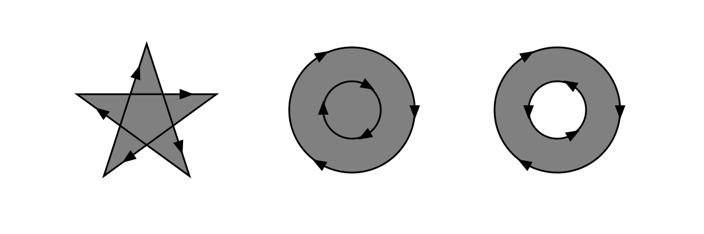
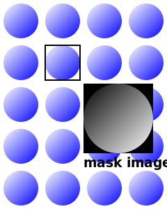
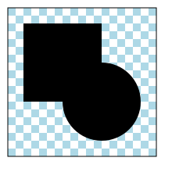
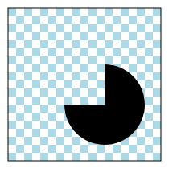
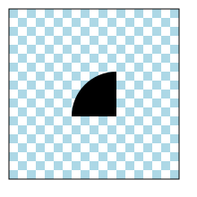

1. Introduction
This section is not normative.
This specification defines two different graphical operations which both fully or partly hide portions of an object: clipping and masking.
1.1. Clipping
A closed vector path, shape or polygon defines a so called clipping path. This clipping path is a region (in the absence of anti-aliasing) where everything on the “inside” of this region is allowed to show through but everything on the outside is “clipped out” and does not appear on the canvas.
A clipping path (middle) is applied on a polygon shaded with different colors (left). This results in a “clipped out” shape (right).
The clip-path property can use specified basic shapes as clipping path or reference an clipPath element with graphics elements to be used as clipping path.
1.2. Masking
The effect of applying a mask to a graphical object is as if the graphical object will be painted onto the background through a mask, thus completely or partially masking out parts of the graphical object.
A luminance mask (middle) is applied on a shape filled with a gradient (left). This results in a masked shape (right).
Masks are applied using the mask-image or mask-border-source properties.
The mask-image property may reference a mask element. The content of the mask element serves as the mask.
Alternatively, for many simple uses, the mask-image property may refer directly to images to be used as mask, forgoing the need for an explicit mask element. This mask can then be sized and positioned just like CSS background images using the mask-position, mask-size and other characterizing properties.
The mask-border-source property splits a mask into 9 pieces. The pieces may be sliced, scaled and stretched in various ways to fit the size of the mask border image area. The mask-border property serves as a shorthand property for mask-border-source and other characterizing properties.
The mask property serves as a shorthand property for all mask-border and mask-image affiliated properties.
Note: While masking gives many possibilities for enhanced graphical effects and in general provides more control over the “visible portions” of the content, clipping paths can perform better and basic shapes are easier to interpolate.
2. Module interactions
This specification defines a set of CSS properties that affect the visual rendering of elements to which those properties are applied. These effects are applied after elements have been sized and positioned according to the Visual formatting model from [CSS21]. Some values of these properties result in the creation of a stacking context. Furthermore, this specification replaces the section Clipping: the clip property from [CSS21].
The compositing model follows the SVG compositing model [SVG11]: First the element is styled under absence of filter effects, masking, clipping and opacity. Then the element and its descendants are drawn on a temporary canvas. In a last step the following effects are applied to the element in order: filter effects [FILTER-EFFECTS], clipping, masking and opacity.
This specification allows compositing multiple mask layers with the Porter Duff compositing operators defined in CSS Compositing and Blending [COMPOSITING-1].
The term object bounding box follows the definition in SVG 1.1 [SVG11].
3. Values
This specification follows the CSS property definition conventions from [CSS21]. Basic shapes are defined in CSS Shapes Module Level 1 [CSS-SHAPES]. Value types not defined in these specifications are defined in CSS Values and Units Module Level 3 [CSS3VAL].
In addition to the property-specific values listed in their definitions, all properties defined in this specification also accept CSS-wide keywords such as inherit as their property value [CSS3VAL]. For readability it has not been repeated explicitly.
4. Terminology
Definitions of CSS properties and values in this specification are analogous to definitions in CSS Backgrounds and Borders [CSS3BG]. To avoid redundancy, this specification relies on descriptions and definitions of CSS Backgrounds and Borders. The following terms in CSS Backgrounds and Borders have the following meaning in this specification:
| Term in CSS Masking | Term in [CSS3BG] |
|---|---|
| mask layer image | background images |
| mask painting area | background painting area |
| mask-size | background-size |
| mask-position | background-position |
| mask positioning area | background positioning area |
| mask border image | border-image |
| mask border image area | border image area |
5. Clipping Paths
The clipping path restricts the region to which paint can be applied, the so-called clipping region. Conceptually, any parts of the drawing that lie outside of this region are not drawn. This includes any content, background, borders, text decoration, outline and visible scrolling mechanism of the element to which the clipping path is applied, and those of its descendants.
An element’s ancestors may also clip portions of their content (e.g., via their own clip or clip-path properties and/or if their overflow property is not visible). What is rendered is the cumulative intersection.
If the clipping region exceeds the bounds of the UA’s document window, content may be clipped to that window by the native operating environment.
A clipping path affects the rendering of an element. It does not affect the element’s inherent geometry. The geometry of a clipped element (i.e. an element which references a clipPath element via a clip-path property, or a child of the referencing element) must remain the same as if it were not clipped.
Consider a shape that is clipped by a clipping path applied to an ancestor:
<g clip-path="circle()"> <path id="shape" d="M0,0 L10,10, L 20,0 z"/>
</g>The shape is referenced by a <use> element:
<use xlink:href="#shape"/>
The geometry of the shape is not influenced by the circular clipping path.
By default, pointer events must not be dispatched on the clipped-out (non-visible) regions of a shape. For example, an element with a dimension of 10px to 10px which is clipped to a circle with a radius of 5px will not receive click events outside the clipping region.
5.1. Clipping Shape: the clip-path property
| Name: | clip-path |
|---|---|
| Value: | <clip-source> | [ <basic-shape> || <geometry-box> ] | none |
| Initial: | none |
| Applies to: | All elements. In SVG, it applies to container elements excluding the <defs> element and all graphics elements
|
| Inherited: | no |
| Percentages: | as specified |
| Media: | visual |
| Computed value: | as specified, but with <url> values made absolute |
| Animatable: | as specified for <basic-shape> [CSS-SHAPES], otherwise no |
Specifies a basic shape or references a clipPath element to create a clipping path.
<clip-source> = <url>
<geometry-box> = <shape-box> | fill-box | stroke-box | view-box
- <basic-shape>
- A basic shape function as defined in the CSS Shapes module [CSS-SHAPES]. A basic shape makes use of the specified reference box to size and position the basic shape. If no reference box is specified, the border-box will be used as reference box.
- <geometry-box>
-
If specified in combination with a <basic-shape> it provides the reference box for the <basic-shape>.
If specified by itself, uses the edges of the specified box, including any corner shaping (e.g. defined by border-radius [CSS3BG]), as clipping path. See also “Shapes from box values” [CSS-SHAPES].
- fill-box
- Uses the object bounding box as reference box.
- stroke-box
- Uses the stroke bounding box as reference box.
- view-box
-
Uses the nearest SVG viewport as reference box.
If a ‘viewBox‘ attribute is specified for the SVG viewport creating element:
- none
- No clipping path gets created.
For SVG elements without associated CSS layout box, the used value for content-box, padding-box, border-box and margin-box is fill-box.
For elements with associated CSS layout box, the used value for fill-box, stroke-box and view-box is border-box.
A computed value of other than none results in the creation of a stacking context [CSS21] the same way that CSS opacity [CSS3COLOR] does for values other than 1.
If the URI reference is not valid (e.g it points to an object that doesn’t exist or the object is not a clipPath element), no clipping is applied.
This example demonstrates the use of the basic shape <polygon()> as clipping path. Each space separated length pair represents one point of the polygon. The visualized clipping path can be seen in the introduction.
clip-path: polygon(15px 99px, 30px 87px, 65px 99px, 85px 55px,122px 57px, 184px 73px, 198px 105px, 199px 150px,
145px 159px, 155px 139px, 126px 120px, 112px 138px,
80px 128px, 39px 126px, 24px 104px);In this example, the clip-path property references an SVG clipPath element. Each comma separated length pair represents one point of the polygon. As for the previous example, the visualized clipping path can be seen in the introduction.
clip-path: url("#clip1");<clipPath id="clip1">
<polygon points="15,99 30,87 65,99 85,55 122,57 184,73 198,105
199,150 145,159 155,139 126,120 112,138 80,128 39,126
24,104"/>
</clipPath>6. SVG Clipping Path Sources
6.1. The clipPath element
| Name: | clipPath |
|---|---|
| Categories: | None. |
| Content model: | Any number of the following elements, in any order: |
| Attributes: | |
| DOM Interfaces: | SVGClipPathElement |
Attribute definitions:
- clipPathUnits = "userSpaceOnUse | objectBoundingBox"
-
Defines the coordinate system for the contents of the clipPath.
- userSpaceOnUse
-
The contents of the clipPath represent values in the current user coordinate system in place at the time when the clipPath element is referenced (i.e., the user coordinate system for the element referencing the clipPath element via the clip-path property).
- objectBoundingBox
-
The coordinate system has its origin at the top left corner of the bounding box of the element to which the clipping path applies to and the same width and height of this bounding box. User coordinates are sized equivalently to the CSS px unit.
If attribute clipPathUnits is not specified, then the effect is as if a value of userSpaceOnUse were specified.
Animatable: yes.
CSS properties inherit into the clipPath element from its ancestors; properties do not inherit from the element referencing the clipPath element.
clipPath elements are never rendered directly; their only usage is as something that can be referenced using the clip-path property. The display property does not apply to the clipPath element; thus, clipPath elements are not directly rendered even if the display property is set to a value other than none, and clipPath elements are available for referencing even when the display property on the clipPath element or any of its ancestors is set to none.
A clipPath element can contain <path> elements, <text> elements, basic shapes (such as <circle>) or a <use> element. If a <use> element is a child of a clipPath element, it must directly reference <path>, <text> or basic shapes elements. Indirect references are an error and the clipPath element must be ignored.
The raw geometry of each child element exclusive of rendering properties such as fill, stroke, stroke-width within a clipPath conceptually defines a 1-bit mask (with the possible exception of anti-aliasing along the edge of the geometry) which represents the silhouette of the graphics associated with that element. Anything outside the outline of the object is masked out. If a child element is made invisible by display or visibility it does not contribute to the clipping path. When the clipPath element contains multiple child elements, the silhouettes of the child elements are logically OR’d together to create a single silhouette which is then used to restrict the region onto which paint can be applied. Thus, a point is inside the clipping path if it is inside any of the children of the clipPath.
For a given graphics element, the actual clipping path used will be the intersection of the clipping path specified by its clip-path property (if any) with any clipping paths on its ancestors, as specified by the clip-path property on the elements which establish a new viewport. (See [SVG11])
A couple of additions:
- The clipPath element itself and its child elements do not inherit clipping paths from the ancestors of the clipPath element.
- The clipPath element or any of its children can specify property clip-path.
If a valid clip-path reference is placed on a clipPath element, the resulting clipping path is the intersection of the contents of the clipPath element with the referenced clipping path.
If a valid clip-path reference is placed on one of the children of a clipPath element, then the given child element is clipped by the referenced clipping path before OR’ing the silhouette of the child element with the silhouettes of the other child elements. - An empty clipping path will completely clip away the element that had the clip-path property applied.
6.2. Winding Rules: the clip-rule property
| Name: | clip-rule |
|---|---|
| Value: | nonzero | evenodd |
| Initial: | nonzero |
| Applies to: | Applies to SVG graphics elements |
| Inherited: | yes |
| Percentages: | n/a |
| Media: | visual |
| Computed value: | as specified |
| Animatable: | no |
The clip-rule property indicates the algorithm which is to be used to determine whether a given point is inside a shape for a clipping region created with a graphics element. The definition of the algorithms and the clip-rule values follows the definition of the fill-rule property. See section “Fill Properties” in SVG 1.1 [SVG11].
- nonzero
- See description of fill-rule property [SVG11].
- evenodd
- See description of fill-rule property [SVG11].
The clip-rule property only applies to graphics elements that are contained within a clipPath element.
Note: The clip-rule property does not apply to <basic-shape>s.
The following drawing illustrates the nonzero rule:

The following drawing illustrates the evenodd rule:
The following fragment of code will cause an even-odd clipping rule to be applied to the clipping path because clip-rule is specified on the <path> element that defines the clipping shape:
<g clip-rule="nonzero">
<clipPath id="MyClip">
<path d="..." clip-rule="evenodd" />
</clipPath>
<rect clip-path="url(#MyClip)" ... />
</g>whereas the following fragment of code will not cause an evenodd clipping rule to be applied because the clip-rule is specified on the referencing element, not on the object defining the clipping shape:
<g clip-rule="nonzero">
<clipPath id="MyClip">
<path d="..." />
</clipPath>
<rect clip-path="url(#MyClip)" clip-rule="evenodd" ... />
</g>7. Positioned Masks
7.1. Mask Image Source: the mask-image property
| Name: | mask-image |
|---|---|
| Value: | <mask-reference># |
| Initial: | none |
| Applies to: | All elements. In SVG, it applies to container elements excluding the <defs> element and all graphics elements
|
| Inherited: | no |
| Percentages: | n/a |
| Media: | visual |
| Computed value: | as specified, but with URIs made absolute |
| Animatable: | no |
This property sets the mask layer image of an element. Where:
<mask-reference> = none | <image> | <mask-source>
<mask-source> = <url>
- <url>
- A URL reference to a mask element (for example url(commonmasks.svg#mask)) or to a CSS image.
- none
- A value of none counts as a transparent black image layer.
A computed value of other than none results in the creation of a stacking context [CSS21] the same way that CSS opacity [CSS3COLOR] does for values other than 1.
A mask reference that is an empty image (zero width or zero height), that fails to download, is not a reference to an mask element, is non-existent, or that cannot be displayed (e.g. because it is not in a supported image format) still counts as an image layer of transparent black.
See the section “Mask processing” for how to process a mask layer image.
Note: A value of none in a list of <mask-reference>s may influence the masking operation depending on the used compositing operator specified by mask-composite.
Note: A <mask-source> counts as mask layer and can be combined in a repeatable <mask-reference> list with <image> or further <mask-source> list items.
Note: An element can also be masked with mask-border-source. See mask-border-source for the interaction of that property with mask-image.
Examples for mask references:
body { mask-image: linear-gradient(black 0%, transparent 100%) }
p { mask-image: none }
div { mask-image: url(resources.svg#mask2) }See the section “Layering multiple mask layer images” for how mask-image interacts with other comma-separated mask properties to form each mask layer.
7.2. Mask Image Interpretation: the mask-mode property
| Name: | mask-mode |
|---|---|
| Value: | <masking-mode># |
| Initial: | match-source |
| Applies to: | All elements. In SVG, it applies to container elements excluding the <defs> element and all graphics elements
|
| Inherited: | no |
| Percentages: | n/a |
| Media: | visual |
| Computed value: | as specified |
| Animatable: | no |
The mask-mode property indicates whether the <mask-reference> is treated as luminance mask or alpha mask. (See Mask processing.)
<masking-mode> = alpha | luminance | match-source
Values have the following meanings:
- alpha
- A value of alpha indicates that the alpha values of the mask layer image should be used as the mask values. See Calculating mask values.
- luminance
- A value of luminance indicates that the luminance values of the mask layer image should be used as the mask values. See Calculating mask values.
- match-source
-
If the <mask-reference> of the mask-image property is of type <mask-source> the luminance values of the mask layer image should be used as the mask values.
If the <mask-reference> of the mask-image property is of type <image> the alpha values of the mask layer image should be used as the mask values.
In the following example, the mask-type property sets the mask type value for the mask element to alpha. The mask-image property has a reference to this mask element and the mask-mode property has a value of luminance. The mask-mode property will override the definition of mask-type to luminance.
The mask-mode property must not affect the masking mode of mask-border-source.
<mask id="SVGMask" mask-type="alpha" maskContentUnits="objectBoundingBox">
<radialGradient id="radialFill">
<stop stop-color="white" offset="0"/>
<stop stop-color="black" offset="1"/>
</radialGradient>
<circle fill="url(#radialFill)" cx="0.5" cy="0.5" r="0.5"/>
</mask>
<style>
rect {
mask-image: url(#SVGMask);
mask-mode: luminance;
}
</style>
<rect width="200" height="200" fill="green"/>See the section “Layering multiple mask layer images” for how mask-mode interacts with other comma-separated mask properties to form each mask layer.
7.3. Tiling Mask Images: The mask-repeat property
| Name: | mask-repeat |
|---|---|
| Value: | <repeat-style># |
| Initial: | no-repeat |
| Applies to: | All elements. In SVG, it applies to container elements excluding the <defs> element and all graphics elements
|
| Inherited: | no |
| Percentages: | n/a |
| Media: | visual |
| Computed value: | Consists of: two keywords, one per dimension |
| Animatable: | no |
Specifies how mask layer images are tiled after they have been sized and positioned.
See background-repeat property [CSS3BG] for the definitions of the property values.
body {
background-color: blue;
mask-image: url(dot-mask.png) luminance;
mask-repeat: space;
}
The effect of space: the mask layer image of a dot is tiled to cover the whole mask painting area and the mask layer images are equally spaced.
See the section “Layering multiple mask layer images” for how mask-repeat interacts with other comma-separated mask properties to form each mask layer.
7.4. Positioning Mask Images: the mask-position property
| Name: | mask-position |
|---|---|
| Value: | <position># |
| Initial: | center |
| Applies to: | All elements. In SVG, it applies to container elements excluding the <defs> element and all graphics elements
|
| Inherited: | no |
| Percentages: | refer to size of mask painting area minus size of mask layer image; see text background-position [CSS3BG] |
| Media: | visual |
| Computed value: | Consisting of: two keywords representing the origin and two offsets from that origin, each given as an absolute length (if given a <length>), otherwise as a percentage. |
| Animatable: | as repeatable list of simple list of length, percentage, or calc |
See the background-position property [CSS3BG] for the definitions of the property values.
In the example below, the (single) image is placed in the lower-right corner of the viewport.
body {
mask-image: url("logo.png");
mask-position: 100% 100%;
mask-repeat: no-repeat;
}Mask positions can also be relative to other corners than the top left. E.g., the following puts the background image 10px from the bottom and 3em from the right:
mask-position: right 3em bottom 10pxSee the section “Layering multiple mask layer images” for how mask-position interacts with other comma-separated mask properties to form each mask layer.
7.5. Masking Area: the mask-clip property
| Name: | mask-clip |
|---|---|
| Value: | [ <geometry-box> | no-clip ]# |
| Initial: | border-box |
| Applies to: | All elements. In SVG, it applies to container elements excluding the <defs> element and all graphics elements
|
| Inherited: | no |
| Percentages: | n/a |
| Media: | visual |
| Computed value: | as specified |
| Animatable: | no |
Determines the mask painting area, which determines the area that is affected by the mask. The painted content of an element must be restricted to this area.
Values have the following meanings:
- content-box
- The painted content is restricted to (clipped to) the content box.
- padding-box
- The painted content is restricted to (clipped to) the padding box.
- border-box
- The painted content is restricted to (clipped to) the border box.
- margin-box
- The painted content is restricted to (clipped to) the masking box.
- fill-box
- The painted content is restricted to (clipped to) the object bounding box.
- stroke-box
- The painted content is restricted to (clipped to) the stroke bounding box.
- view-box
-
Uses the nearest SVG viewport as reference box.
If a ‘viewBox‘ attribute is specified for the SVG viewport creating element:
- no-clip
- The painted content is not restricted (not clipped).
For SVG elements without associated CSS layout box, the values content-box, padding-box, border-box and margin-box compute to fill-box.
For elements with associated CSS layout box, the values fill-box, stroke-box and view-box compute to the initial value of mask-clip.
See the section “Layering multiple mask layer images” for how mask-clip interacts with other comma-separated mask properties to form each mask layer.
7.6. Positioning Area: the mask-origin property
| Name: | mask-origin |
|---|---|
| Value: | <geometry-box># |
| Initial: | border-box |
| Applies to: | All elements. In SVG, it applies to container elements excluding the <defs> element and all graphics elements
|
| Inherited: | no |
| Percentages: | n/a |
| Media: | visual |
| Computed value: | as specified |
| Animatable: | no |
For elements rendered as a single box, specifies the mask positioning area. For elements rendered as multiple boxes (e.g., inline boxes on several lines, boxes on several pages) specifies which boxes box-decoration-break operates on to determine the mask positioning area.
- content-box
- The position is relative to the content box.
- padding-box
- The position is relative to the padding box. (For single boxes 0 0 is the upper left corner of the padding edge, 100% 100% is the lower right corner.)
- border-box
- The position is relative to the border box.
- margin-box
- The position is relative to the margin box.
- fill-box
- The position is relative to the object bounding box.
- stroke-box
- The position is relative to the stroke bounding box.
- view-box
-
Uses the nearest SVG viewport as reference box.
If a ‘viewBox‘ attribute is specified for the SVG viewport creating element:
For SVG elements without associated CSS layout box, the values content-box, padding-box, border-box and margin-box compute to fill-box.
For elements with associated CSS layout box, the values fill-box, stroke-box and view-box compute to the initial value of mask-origin.
Note: If mask-clip is padding-box, mask-origin is border-box, mask-position is top left (the initial value), and the element has a non-zero border, then the top and left of the mask layer image will be clipped.
See the section “Layering multiple mask layer images” for how mask-origin interacts with other comma-separated mask properties to form each mask layer.
7.7. Sizing Mask Images: the mask-size property
| Name: | mask-size |
|---|---|
| Value: | <bg-size># |
| Initial: | auto |
| Applies to: | All elements. In SVG, it applies to container elements excluding the <defs> element and all graphics elements
|
| Inherited: | no |
| Percentages: | n/a |
| Media: | visual |
| Computed value: | as specified, but with lengths made absolute |
| Animatable: | as repeatable list of simple list of length, percentage, or calc (This means keyword values are not animatable.) |
Specifies the size of the mask layer images.
See background-size property [CSS3BG] for the definitions of the property values.
See the section “Layering multiple mask layer images” for how mask-size interacts with other comma-separated mask properties to form each mask layer.
7.8. Compositing mask layers: the mask-composite property
| Name: | mask-composite |
|---|---|
| Value: | <compositing-operator># |
| Initial: | add |
| Applies to: | All elements. In SVG, it applies to container elements without the <defs> element and all graphics elements
|
| Inherited: | no |
| Percentages: | n/a |
| Media: | visual |
| Computed value: | as specified |
| Animatable: | no |
<compositing-operator> = add | subtract | intersect | exclude
Each keyword represents a Porter-Duff compositing operator [COMPOSITING-1] which defines the compositing operation used on the current mask layer with the mask layers below it.
In the following, the current mask layer is referred to source, all mask layers below it (with the corresponding compositing operators applied) are referred to destination.
- add
- The source is placed over the destination. (See Porter-Duff compositing operator source over for more details.)
- subtract
- The source is placed, where it falls outside of the destination. (See Porter-Duff compositing operator source out for more details.)
- intersect
- The parts of source that overlap the destination, replace the destination. (See Porter-Duff compositing operator source in .)
- exclude
- The non-overlapping regions of source and destination are combined. (See Porter-Duff compositing operator XOR.)
If there is no further mask layer, the compositing operator must be ignored. Mask layers must not composite with the element’s content or the content behind the element, instead they must act as if they are rendered into an isolated group.
All mask layers below the current mask layer must be composited before applying the compositing operation for the current mask layer.
This example uses two mask layer images: circle.svg and rect.svg.
Both mask layer images are references with the mask-image property:
mask-image: circle.svg, rect.svg;
The mask layer with rect.svg is below the mask layer with circle.svg. That means circle.svg is closer to the user than rect.svg.
With the property mask-composite the author may choose different ways to combine multiple mask layers.
-
add paints the circle.svg on top of rect.svg. The behavior is described by the compositing operator source over.
mask-composite: add; -
subtract paints portions of circle.svg that do not overlap rect.svg. The behavior is described by the compositing operator source out.
mask-composite: subtract; -
intersect paints portions of circle.svg that overlap rect.svg. The behavior is described by the compositing operator source in.
mask-composite: intersect; -
exclude paints portions of circle.svg and rect.svg that do not overlap. The behavior is described by the compositing operator XOR.
mask-composite: exclude;
The following example specifies two mask layers and two compositing operators.
mask-image: rect.svg, circle.svg;
mask-composite: add, exclude;
rect.svg and circle.svg make use of the add compositing operator. There is no further mask layer to use exclude and therefore, exclude is ignored.
This is an example of 3 mask layers with different compositing operators.
mask-image: trapeze.svg, circle.svg, rect.svg;
mask-composite: subtract, add;
First, circle.svg is “added” to rect.svg. In a second step, trapeze.svg is “subtracted” from the previous two layers.

See the section “Layering multiple mask layer images” for how mask-composite interacts with other comma-separated mask properties to form each mask layer.
7.9. Mask Shorthand: the mask property
| Name: | mask |
|---|---|
| Value: | <mask-layer># |
| Initial: | see individual properties |
| Applies to: | All elements. In SVG, it applies to container elements excluding the <defs> element and all graphics elements
|
| Inherited: | no |
| Percentages: | see individual properties |
| Media: | visual |
| Computed value: | see individual properties |
| Animatable: | see individual properties |
<mask-layer> = <mask-reference> <masking-mode>? || <position> [ / <bg-size> ]? ||<repeat-style> || <geometry-box> || [ <geometry-box> | no-clip ] || <compositing-operator>
If one <geometry-box> value is present then it sets both mask-origin and mask-clip to that value. If two <geometry-box> values are present, then the first sets mask-origin and the second mask-clip.
The used value of the properties mask-repeat, mask-position, mask-clip, mask-origin and mask-size must have no effect if <mask-reference> references a mask element. In this case the element defines position, sizing and clipping of the mask layer image.
The mask shorthand also resets mask-border to its initial value. It is therefore recommended that authors use the mask shorthand, rather than other shorthands or the individual properties, to override any mask settings earlier in the cascade. This will ensure that mask-border has also been reset to allow the new styles to take effect.
7.10. The Mask Image Rendering Model
The application of the mask-image property with a value other than none to an element formatted with the CSS box model establishes a stacking context in the same way that CSS opacity [CSS3COLOR] does, and all the element’s descendants are rendered together as a group with the masking applied to the group as a whole.
The mask-image property has no effect on the geometry or hit-testing of any element’s CSS boxes.
7.10.1. Mask processing
In the following section, mask image refers either to a mask layer image or to a mask border image.
A mask image may be interpreted using one of two different methods with regards to calculating the mask values that will be multiplied with the target alpha values.
The first and simplest method of calculating the mask values is to use the alpha channel of the mask image. In this case the mask value at a given point is simply the value of the alpha channel at that point. The color channels do not contribute to the mask value.
The second method of calculating the mask values is to use the luminance of the mask image. In this case the mask value at a given point is computed from the color channel values and alpha channel value using the following procedure.
-
Compute a luminance value from the color channel values.
- If the computed value of color-interpolation on the mask element is linearRGB, convert the original image color values (potentially in the sRGB color space) to the linearRGB color space.
- Then, using non-premultiplied RGB color values, apply the luminance-to-alpha coefficients (as defined in the
<feColorMatrix>filter primitive [SVG11]) to convert the RGB color values to luminance values.
- Multiply the computed luminance value by the corresponding alpha value to produce the mask value.
Regardless of the method used, the procedure for calculating mask values assumes the content of the mask is a four-channel RGBA graphics object. For other types of graphics objects, special handling is required as follows.
For a three-channel RGB graphics object that is used in a mask (e.g., when referencing a three-channel image file), the effect is as if the object were converted into a four-channel RGBA image with the alpha channel uniformly set to 1.
For a single-channel image that is used in a mask (e.g., when referencing a single-channel grayscale image file), the effect is as if the object were converted into a four-channel RGBA image, where the single channel from the referenced object is used to compute the three color channels and the alpha channel is uniformly set to 1.
Note: When referencing a grayscale image file, the transfer curve relating the encoded grayscale values to linear light values must be taken into account when computing the color channels.
Note: SVG graphics elements (e.g., <circle> or <text>) are all treated as four-channel RGBA images for the purposes of masking operations.
The effect of a mask is identical to what would have happened if there were no mask but instead the alpha channel of the given object were multiplied with the mask’s resulting mask values.
Regions not covered by a mask image are treated as transparent black. The mask value is 0.
Note: Masks with repeating mask image tiles may have an offset to each other. The space between the mask images is treated as a transparent black mask.
7.10.2. Layering Multiple Mask Images
The mask of a box can have multiple layers. The number of layers is determined by the number of comma-separated values for the mask-image property. A value of none in a list of values with other <mask-reference>s still creates a layer.
See Layering Multiple Background Images [CSS3BG].
All mask layer images are transformed to alpha masks (if necessary see Mask processing) and combined by compositing taking the compositing operators specified by mask-composite into account.
8. Border-Box Mask
With mask-border an image can be split into nine pieces: four corners, four edges and the middle piece as demonstrated in the figure below.
Pieces of a mask border image.
These pieces may be sliced, scaled and stretched in various ways to fit the size of the mask border image area. This distorted image is then used as a mask. The syntax of mask-border corresponds to the border-image property of CSS Background and Borders [CSS3BG].
The mask border image in the following example is split into four corners with dimensions of 75 pixels, four edges and the middle piece that is stretched and scaled.
Example for mask-border. The object on the left is the object to mask. The second image is the alpha mask and the last image the masked object.
div { background: linear-gradient(bottom, #F27BAA 0%, #FCC8AD 100%);
mask-border-slice: 25 fill;
mask-border-repeat: stretch;
mask-border-source: url(mask.png);
}8.1. Mask Border Image Source: the mask-border-source property
| Name: | mask-border-source |
|---|---|
| Value: | none | <image> |
| Initial: | none |
| Applies to: | All elements. In SVG, it applies to container elements excluding the <defs> element and all graphics elements
|
| Inherited: | no |
| Percentages: | n/a |
| Media: | visual |
| Computed value: | none or the image with its URI made absolute |
| Animatable: | no |
Specifies an image to be used as mask border image.
An image that is an empty image (zero width or zero height), that fails to download, is non-existent, or that cannot be displayed (e.g. because it is not in a supported image format) is ignored. It still counts as an mask border image but does not mask the element.
See “Mask processing” on how to process the mask border image.
A computed value of other than none results in the creation of a stacking context [CSS21] the same way that CSS opacity [CSS3COLOR] does for values other than 1.
mask-border-source and mask-image can be specified independent of each other. If both properties have a value other than none, the element is masked by both masking operations one after the other.
Note: It does not matter if mask-image is applied to the element before or after mask-border-source. Both operation orders result in the same rendering.
8.2. Mask Border Image Interpretation: the mask-border-mode property
| Name: | mask-border-mode |
|---|---|
| Value: | luminance | alpha |
| Initial: | alpha |
| Applies to: | All elements. In SVG, it applies to container elements excluding the <defs> element and all graphics elements
|
| Inherited: | no |
| Percentages: | n/a |
| Media: | visual |
| Computed value: | as specified |
| Animatable: | no |
The mask-border-mode property indicates whether the <image> value for mask-border-source is treated as luminance mask or alpha mask. (See Mask processing.)
Values have the following meanings:
- alpha
- A value of alpha indicates that the alpha values of the mask border image should be used as the mask values. See Calculating mask values.
- luminance
- A value of luminance indicates that the luminance values of the mask border image should be used as the mask values. See Calculating mask values.
The mask-mode and mask-type properties must have no affect on the mask border image type.
8.3. Mask Border Image Slicing: the mask-border-slice property
| Name: | mask-border-slice |
|---|---|
| Value: | [<number> | <percentage>]{1,4} fill? |
| Initial: | 0 |
| Applies to: | All elements. In SVG, it applies to container elements excluding the <defs> element and all graphics elements
|
| Inherited: | no |
| Percentages: | refer to size of the mask border image |
| Media: | visual |
| Computed value: | as specified |
| Animatable: | no |
This property specifies inward offsets from the top, right, bottom, and left edges of the mask border image, dividing it into nine regions: four corners, four edges and a middle. The middle image part is discarded and treated as fully opaque white (the content covered by the middle part is not masked and shines through) unless the fill keyword is present.
See the border-image-slice property [CSS3BG] for the definitions of the property values.
8.4. Masking Areas: the mask-border-width property
| Name: | mask-border-width |
|---|---|
| Value: | [ <length> | <percentage> | <number> | auto ]{1,4} |
| Initial: | auto |
| Applies to: | All elements. In SVG, it applies to container elements excluding the <defs> element and all graphics elements
|
| Inherited: | no |
| Percentages: | relative to width/height of the mask border image area |
| Media: | visual |
| Computed value: | all <length>s made absolute, otherwise as specified |
| Animatable: | no |
The mask border image is drawn inside an area called the mask border image area. This is an area whose boundaries by default correspond to the border box, see mask-border-outset.
See the border-image-width property [CSS3BG] for the definitions of the property values.
Note: For SVG elements without an associated layout box the border-width is considered to be 0.
8.5. Edge Overhang: the mask-border-outset property
| Name: | mask-border-outset |
|---|---|
| Value: | [ <length> | <number> ]{1,4} |
| Initial: | 0 |
| Applies to: | All elements. In SVG, it applies to container elements excluding the <defs> element and all graphics elements
|
| Inherited: | no |
| Percentages: | n/a |
| Media: | visual |
| Computed value: | all <length>s made absolute, otherwise as specified |
| Animatable: | no |
The values specify the amount by which the mask border image area extends beyond the border box. If it has four values, they set the outsets on the top, right, bottom and left sides in that order. If the left is missing, it is the same as the right; if the bottom is missing, it is the same as the top; if the right is missing, it is the same as the top.
As with mask-border-width, a <number> represents a multiple of the corresponding border-width. Negative values are not allowed for any of the mask-border-outset values.
Note: For SVG elements without associated layout box the border-width is considered to be 0.
8.6. Mask Border Image Tiling: the mask-border-repeat property
| Name: | mask-border-repeat |
|---|---|
| Value: | [ stretch | repeat | round | space ]{1,2} |
| Initial: | stretch |
| Applies to: | All elements. In SVG, it applies to container elements excluding the <defs> element and all graphics elements
|
| Inherited: | no |
| Percentages: | n/a |
| Media: | visual |
| Computed value: | as specified |
| Animatable: | no |
This property specifies how the images for the sides and the middle part of the mask border image are scaled and tiled. The first keyword applies to the horizontal sides, the second to the vertical ones. If the second keyword is absent, it is assumed to be the same as the first.
See the border-image-repeat property [CSS3BG] for the definitions of the property values.
The exact process for scaling and tiling the mask border image parts is given in the section Masking with the mask border image
8.7. Mask Border Image Shorthand: the mask-border property
| Name: | mask-border |
|---|---|
| Value: | <‘mask-border-source’> || <‘mask-border-slice’> [ / <‘mask-border-width’>? [ / <‘mask-border-outset’> ]? ]? || <‘mask-border-repeat’> || <‘mask-border-mode’> |
| Initial: | See individual properties |
| Applies to: | See individual properties |
| Inherited: | no |
| Percentages: | n/a |
| Media: | visual |
| Computed value: | See individual properties |
| Animatable: | See individual properties |
This is a shorthand property for setting mask-border-source, mask-border-slice, mask-border-width, mask-border-outset and mask-border-repeat. Omitted values are set to their initial values.
Note: The mask shorthand resets the properties mask-border, mask-border-source, mask-border-mode, mask-border-slice, mask-border-width, mask-border-outset and mask-border-repeat.
8.8. Masking with the mask border image
After the mask border image given by mask-border-source is sliced by the mask-border-slice values, the resulting nine images are scaled, positioned, and tiled into their corresponding mask border image regions in four steps as described in the section Drawing the Border Image [CSS3BG].
The application of the mask-border-source property to an element formatted with the CSS box model establishes a stacking context in the same way that CSS opacity [CSS3COLOR] does, and all the element’s descendants are rendered together as a group with the masking applied to the group as a whole.
The mask-border-source property has no effect on the geometry or hit-testing of any element’s CSS boxes.
9. SVG Mask Sources
9.1. The mask element
| Name: | mask |
|---|---|
| Categories: | Container element |
| Content model: | Any number of the following elements, in any order: |
| Attributes: | |
| DOM Interfaces: | SVGMaskElement |
Attribute definitions:
- maskUnits = "userSpaceOnUse | objectBoundingBox"
-
Defines the coordinate system for attributes x, y, width and height.
- userSpaceOnUse
-
x, y, width and height represent values in the current user coordinate system [CSS3-TRANSFORMS] in place at the time when the mask element is referenced (i.e., the user coordinate system for the element referencing the mask element via the mask property).
- objectBoundingBox
-
x, y, width and height represent fractions or percentages of the object bounding box of the element to which the mask is applied. User coordinates are sized equivalently to the CSS px unit.
If attribute maskUnits is not specified, then the effect is as if a value of objectBoundingBox were specified.
Animatable: yes.
- maskContentUnits = "userSpaceOnUse | objectBoundingBox"
-
Defines the coordinate system for the contents of the mask.
- userSpaceOnUse
-
The user coordinate system for the contents of the mask element is the current user coordinate system in place at the time when the mask element is referenced (i.e., the user coordinate system for the element referencing the mask element via the mask property).
- objectBoundingBox
-
The coordinate system has its origin at the top left corner of the bounding box of the element to which the clipping path applies to and the same width and height of this bounding box. User coordinates are sized equivalently to the CSS px unit.
If attribute maskContentUnits is not specified, then the effect is as if a value of userSpaceOnUse were specified.
Animatable: yes.
- x = "<length> | <percentage>"
-
The x-axis coordinate of one corner of the rectangle for the largest possible offscreen buffer. If the attribute is not specified but at least one of the attributes y, width or height are specified, the effect is as if a value of -10% were specified.
Animatable: yes.
- y = "<length> | <percentage>"
-
The y-axis coordinate of one corner of the rectangle for the largest possible offscreen buffer.
If the attribute is not specified but at least one of the attributes x, width or height are specified, the effect is as if a value of -10% were specified.
Animatable: yes.
- width = "<length> | <percentage>"
-
The width of the largest possible offscreen buffer. A negative value or a value of zero disables rendering of the element.
If the attribute is not specified but at least one of the attributes x, y or height are specified, the effect is as if a value of 120% were specified.
Animatable: yes.
- height = "<length> | <percentage>"
-
The height of the largest possible offscreen buffer.
A negative value or a value of zero disables rendering of the element.
If the attribute is not specified but at least one of the attributes x, y or width are specified, the effect is as if a value of 120% were specified.
Animatable: yes.
If at least one of the attributes x, y, width or height are specified, the given object and the rectangle defined by x, y, width and height establish a current clipping path. The rendered content of the mask must be clipped by this current clipping path.
CSS properties inherit into the mask element from its ancestors; properties do not inherit from the element referencing the mask element.
mask elements are never rendered directly; their only usage is as something that can be referenced using the mask property. The opacity, filter and display properties do not apply to the mask element; thus, mask elements are not directly rendered even if the display property is set to a value other than none, and mask elements are available for referencing even when the display property on the mask element or any of its ancestors is set to none.
9.2. Mask Source Interpretation: the mask-type property
| Name: | mask-type |
|---|---|
| Value: | luminance | alpha |
| Initial: | luminance |
| Applies to: | mask elements |
| Inherited: | no |
| Percentages: | n/a |
| Media: | visual |
| Computed value: | as specified |
| Animatable: | no |
The mask-type property defines whether the content of the mask element is treated as as luminance mask or alpha mask, as described in Calculating mask values.
Values have the following meanings:
- luminance
- Indicates that the luminance values of the mask should be used.
- alpha
- Indicates that the alpha values of the mask should be used.
The mask-type property allows the author of the mask element to specify the preferred masking mode. However, the author can override this preference by setting the mask-mode value to something different than match-source on the masked content.
In the following example the computed value of mask-type is luminance and the computed value of mask-mode is match-source. The UA must follow the preferred masking mode defined on the mask element.
<svg>
<mask style="mask-type: luminance;" id="mask">
...
</mask>
</svg>
<p style="mask-image: url(#mask); mask-mode: auto;">
This is the masked content.
</p>
In the next example the computed value of mask-mode is alpha and overrides the preference on the mask element that is computed to luminance. The mask layer image is used as an alpha mask.
<svg>
<mask style="mask-type: luminance;" id="mask2">
...
</mask>
</svg>
<p style="mask-image: url(#mask2); mask-mode: alpha;">
This is the masked content.
</p>
The mask-type property is a presentation attribute for SVG elements.
10. Security
It is important that the timing to the masking operations is independent of the source and destination pixel. Masking operations must be implemented in such a way that they always take the same amount of time regardless of the pixel values. If this rule is not followed, an attacker could infer information and mount a timing attack.
A timing attack is a method of obtaining information about content that is otherwise protected, based on studying the amount of time it takes for an operation to occur. If, for example, red pixels took longer to draw than green pixels, one might be able to reconstruct a rough image of the element being rendered, without ever having access to the content of the element.
<mask-source>s and <clip-source>s have special requirements on fetching resources.
User agents must use the potentially CORS-enabled fetch method defined by the [HTML5] specification for all <mask-source>, <clip-source> and <image> values on the mask-image, mask-border-source and clip-path properties. When fetching, user agents must use “Anonymous” mode, set the referrer source to the stylesheet’s URL and set the origin to the URL of the containing document. If this results in network errors, the effect is as if the value none had been specified.
Appendix A: The deprecated clip property
| Name: | clip |
|---|---|
| Value: | rect() | auto |
| Initial: | auto |
| Applies to: | Absolutely positioned elements. In SVG, it applies to elements which establish a new viewport, <pattern> elements and mask elements.
|
| Inherited: | no |
| Percentages: | n/a |
| Media: | visual |
| Computed value: | as specified |
| Animatable: | as rectangle |
With this specification the clip property is deprecated. Authors are encouraged to use the clip-path property instead. UAs must support the clip property.
The clip property applies only to absolutely positioned elements. In SVG, it applies to elements which establish a new viewport, <pattern> elements and mask elements. Values have the following meanings:
- auto
- The element does not clip.
- rect() = rect( <top>, <right>, <bottom>, <left> )
-
<top> and <bottom> specify offsets from the top border edge of the box, and <right>, and <left> specify offsets from the left border edge of the box. Authors should separate offset values with commas. User agents must support separation with commas, but may also support separation without commas (but not a combination), because a previous revision of this specification was ambiguous in this respect.
<top>, <right>, <bottom>, and <left> may either have a <length> value or auto. Negative lengths are permitted. The value auto means that a given edge of the clipping region will be the same as the edge of the element’s generated border box (i.e., auto means the same as 0 for <top> and <left>, the same as the used value of the height plus the sum of vertical padding and border widths for <bottom>, and the same as the used value of the width plus the sum of the horizontal padding and border widths for <right>, such that four auto values result in the clipping region being the same as the element’s border box).
When coordinates are rounded to pixel coordinates, care should be taken that no pixels remain visible when <left> and <right> have the same value (or <top> and <bottom> have the same value), and conversely that no pixels within the element’s border box remain hidden when these values are auto.
Example: The following two rules:
p#one { clip: rect(5px, 40px, 45px, 5px); }
p#two { clip: rect(5px, 55px, 45px, 5px); }and assuming both Ps are 50 by 55 pixel, will create, respectively, the rectangular clipping regions delimited by the dashed lines in the following illustrations:

This diagram illustrates two block boxes, one next to the other, with rectangular clipping regions of different dimensions. (See long description.)
Appendix B: Compute stroke bounding box
The algorithm to compute the stroke bounding box is as follows, depending on the type of element:
- a graphics element without
<use>or<image>- an
<a>element with a text content element - an
-
- Let box be a rectangle initialized to the object bounding box of element.
- If the used value of stroke-width <= 0 or the used value of stroke is none return box.
- Let delta be the inflation value initialized to the half of the stroke-width.
-
If element is not
<rect>,<ellipse>,<circle>or<image>just follow one of the following conditions in the order they apply:- the used value for stroke-linejoin is miter
-
- Let miter be the used value of stroke-miterlimit.
- If miter is smaller than the square root of 2 and if the used value for stroke-linecap is square, multiply delta with the square root of 2. Otherwise, multiply delta with miter.
- the used value for stroke-linecap is square
-
- Multiply delta with the square root of 2.
- Inflate box with the value of delta.
- Return box.
Note: The values of the stroke-opacity, stroke-dasharray and stroke-dashoffset do not affect the calculation of the stroke bounding box.
- a container element
<use> -
- Let parent be the container element if it is one, or the root of the
<use>element’s shadow tree otherwise. -
For each child child of parent
- Invoke the stroke bounding box algorithm with child.
- Let childBox be the returned box value of the invoked algorithm.
- Map childBox from the coordinate space of child to the coordinate space of parent.
- Let box be the union of all childBoxes.
- Return box.
- Let parent be the container element if it is one, or the root of the
<image>-
- Return the object bounding box of element.
Note: A future version of the SVG specification may override this section.
Appendix C: DOM interfaces
Interface SVGClipPathElement
The SVGClipPathElement interface corresponds to the clipPath element.
interface SVGClipPathElement : SVGElement { readonly attribute SVGAnimatedEnumeration clipPathUnits;
readonly attribute SVGAnimatedTransformList transform;
};
SVGClipPathElement implements SVGUnitTypes;
- Attributes:
-
- clipPathUnits (readonly SVGAnimatedEnumeration)
-
Corresponds to attribute clipPathUnits on the given clipPath element. Takes one of the constants defined in SVGUnitTypes.
- transform (readonly SVGAnimatedTransformList)
-
Corresponds to presentation attribute transform on the given element.
Interface SVGMaskElement
The SVGMaskElement interface corresponds to the mask element.
interface SVGMaskElement : SVGElement { readonly attribute SVGAnimatedEnumeration maskUnits;
readonly attribute SVGAnimatedEnumeration maskContentUnits;
readonly attribute SVGAnimatedLength x;
readonly attribute SVGAnimatedLength y;
readonly attribute SVGAnimatedLength width;
readonly attribute SVGAnimatedLength height;
};
SVGMaskElement implements SVGUnitTypes;
- Attributes:
-
- maskUnits (readonly SVGAnimatedEnumeration)
-
Corresponds to attribute maskUnits on the given mask element. Takes one of the constants defined in SVGUnitTypes.
- maskContentUnits (readonly SVGAnimatedEnumeration)
-
Corresponds to attribute maskContentUnits on the given mask element. Takes one of the constants defined in SVGUnitTypes.
- x (readonly SVGAnimatedLength)
- y (readonly SVGAnimatedLength)
- width (readonly SVGAnimatedLength)
- height (readonly SVGAnimatedLength)
Changes since last publication
The following changes were made since the 22 May 2014 Working Draft.
- Change the inital value of mask-size from border-box to auto.
The following changes were made since the 13 February 2014 Working Draft.
- Renamed mask-box* properties and terms to mask-border*.
- Added support for multiple mask layers. (Similar to multiple background layers for background.)
- Added the mask-composite property to control compositing of multiple mask layer images with the keywords add, subtract, intersect and exclude.
- mask-border-slice without keyword fill does not clip middle piece of content anymore. Changed initial value from 0 fill to 0.
- Better description for clip-rule, mask-mode and mask-type.
- Rename fill and stroke keywords to fill-box and stroke-box.
- Added definition for stroke bounding box.
- Better differentiation between mask images: mask layer image and mask border image.
The following changes were made since the 29 October 2013 Last Call Working Draft.
- Remove note that a future version of the spec will allow controlling hit testing on clipping.
- Changed order of sections within the document.
- Make clear that the used value of the properties mask-image, mask-repeat, mask-position, mask-clip, mask-origin and mask-size must be ignored for <mask-source>, not the properties.
- "Animatable" section of mask-size, mask-position described as repeatable list of lists. Changed to a single list.
- Computed value of mask-repeat and mask-position was described as list of items. Changed to have just one value.
- Change link to ED from https://drafts.fxtf.org/masking/ to https://drafts.fxtf.org/css-masking-1/
The following significant changes were made since the 20 June 2013 Working Draft.
- mask resets mask-box properties.
- Initial values for mask-repeat, mask-position and mask-origin changed to no-repeat, center and border-box.
- Multiple layers of mask images were deferred to a future level of this specification.
- Added security model for pixel operations and fetching of masking and clipping resources.
- Deferred child and select() function to next level.
The following significant changes were made since the 15 November 2012 Working Draft.
- Better integration with terms and definitions of CSS Backgrounds and Borders module.
- Syntax changes on mask shorthand property to be conform with background shorthand property.
- Define how the implementation can differ between an SVG resource (mask, clipPath) and an image resource.
- Added mask-mode property to alter between luminance and alpha mask on mask-image.
- Adapt IDL definition of SVGMaskElement and SVGClipPathElement to WebIDL.
- Further editorial changes.
See detailed list of changes in the ChangeLog.
Acknowledgments
Thanks to Elika J. Etemad, Cameron McCormack, Liam R. E. Quin, Björn Höhrmann, Alan Stearns and Sara Soueidan for their careful reviews, comments, and corrections. Special thanks to CJ Gammon for graphical assets.